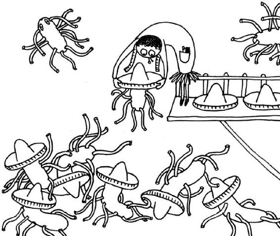

The Bad Guys—Harmful Bacteria and Parasites
THERE ARE GOOD guys and there are bad guys in the world—and the same goes for the world of our microbes. One thing unites most of the bad guys: they only want what’s best . . . for themselves.
Salmonellae in Hats
EVEN THE MOST courageous of cooks sometimes feel a pang of primal fear while beating eggs—fear of the raw threat posed by Salmonella! Everyone knows someone who has endured devastating diarrhea and venomous vomiting after eating chicken that was not quite done or nibbling on a bit of raw cake mix.
Salmonella bacteria can get into our food in unexpected ways. Sometimes, globalization helps them find a home in our chicken, meat, or eggs. This is how it can happen in Germany, where I live. The cheapest source of feed grain for chickens is Africa. So, we fly it in to feed the fowl in our poultry farms. However, there are more wild tortoises and lizards wandering around in Africa than Germany. Salmonella bacteria travel to our climes along with the chicken feed. How so? Well, they are part of the normal gut flora of reptiles. While the African farmer is working in the fields, a tortoise might merrily be doing its business in a sack of grain destined for Germany. After an exciting flight with a wonderful view over the clouds, the grain, along with its stowaway tortoise-poop bacteria, ends up in a German poultry farm, where it is eaten by a hungry chicken. Salmonella bacteria are not part of a chicken’s natural gut flora, but they are a common pathogen. Similar contamination can occur in other countries when animal feed contains materials where Salmonellae may lurk.
Once inside the bird’s gut, the Salmonellae can multiply, and they are eventually excreted. Since chickens have only one hole for all export goods, the egg cannot avoid coming into contact with Salmonellae in the bird’s feces. The bacteria are then found only on the shells of eggs—they only get inside when the shell is cracked.
But what about Salmonellae in chicken meat? How do they get there? That’s a rather unsavory story. Cheaply fed chickens are usually sent to large industrial slaughterhouses to meet their maker. Once they have been slaughtered and beheaded, they are dunked in huge tanks of water. Those tanks are like a wellness spa for Salmonella bacteria, complete with a colonic irrigation service for the chickens. In a slaughterhouse dispatching 200,000 birds a day, one batch of cheap-feed chickens is enough to give the gift of Salmonella to all the other birds in the bath. The chickens then end up in the freezers of discount supermarkets. If they are roasted or grilled at high-enough temperatures, the Salmonella germs are soon killed off and can no longer cause problems for anyone.
Properly cooked meat is normally not the reason for most Salmonella infections. The problems begin when the frozen chicken is left to thaw in the kitchen sink or colander. Freezing and thawing does bacteria little harm. The huge library of bacteria in our laboratory includes germs, collected from patients, that easily survive temperatures of minus 112 degrees Fahrenheit (minus 80 degrees Celsius) and live merrily on when thawed. Heat is their nemesis. Even just ten minutes’ exposure to a temperature of 167 degrees Fahrenheit (75 degrees Celsius) is enough to see off all Salmonella bacteria. That’s why a carefully roasted chicken is not usually the culprit, but rather the lettuce leaves for the side salad, left to soak briefly in the same kitchen sink.
We come into regular contact with the gut flora of the livestock we keep, but we only notice it when they happen to include unfamiliar, diarrhea-causing bacteria. The rest is routine, so to speak, and after all, we have to get our bacteria from somewhere. Sticking to organic country eggs from chickens fed with home-grown grain is usually a reliable way to avoid dangerous bacteria—unless the farmer himself eats cheap chicken from a discount supermarket.
If our Sunday roast chicken is not roasted enough, we can end up eating not just chicken muscle cells but a few Salmonella cells, too. It takes between ten thousand and one million of these single-celled creatures to put us out of action. A million of these bacteria take up about one-fifth as much space as a grain of salt. So, how does an army of such tiny soldiers manage to move a colossus like us—with the volume of about 600,000,000 grains of salt—inexorably toward the toilet? It’s as if one hair of the American president’s head were to rule over the entire population of the United States.
Salmonella bacteria double in number much more quickly than politicians’ hairs—that’s point one. As soon as the temperature rises above 50 degrees Fahrenheit (10 degrees Celsius), Salmonellae come out of hibernation and get busy breeding. They have delicate little arms that enable them to swim around until they find a place to attach to the gut. Once there, they invade our cells, which become infected and pump large quantities of fluid into the gut in an attempt to flush out the pathogen as quickly as possible.
It can take a few hours to a few days from accidental ingestion to watery flush-out. A self-induced colonic irrigation like this usually works well, unless the victim is too young, too old, or too frail. Antibiotics would do more harm than good here. Despite this natural cure, it is better for the gut to flatly refuse entry to Salmonella, however rude that may seem. After a visit to the toilet or a retching session into a sick bag, you should not take them by the hand and show them what life is like in the outside world. They should be given the cold shoulder by washing with very hot water and soap to let them know: it’s not you, it’s me—I just can’t deal with your clinging personality.
Salmonellae are the most common type of bad guys we take in with our food. They are not found exclusively in poultry products, but poultry products are one of Salmonellae’s favorite hang-outs. Salmonellae come in several varieties. When we receive stool samples from patients at our laboratory, we can test them by exposing them to different antibodies. When an antibody bonds with the Salmonellae, they clump together into blobs that are big enough to see with the naked eye.
When that happens, we can say that the antibody to vomit-inducing Salmonella XY reacts strongly, so this must be vomit-inducing Salmonella XY. This is the same as the mechanism in our own body. Our immune system meets a couple of new Salmonellae and says, “Hmmm, I’m sure I must have a hat that fits them somewhere in my collection.” It then rummages around in its wardrobes to find the right hat, adjusts it a little to create the perfect fit, then commissions a hatter to make headgear for a million Salmonella germs. When all the Salmonella bacteria are wearing their new hats, they no longer look dangerous, but rather ridiculous. They are weighed down so much by the millinery that they are too heavy to swim around attacking anything. In this way, the test antibodies in the lab can be seen as a small selection of different hats. When the hat fits, the heavily sombreroed bacteria collapse into clumps and—depending on the hat—we can say which type of Salmonella was in the stool sample.
For those who do not necessarily want to send their immune system searching for hats and who are no great fans of diarrhea and vomiting, there are a few simple rules to follow.
Rule number one: Always use plastic chopping boards because they are easier to clean properly and provide fewer grooves and ridges for bacteria to hide in.
Rule number two: Always wash anything that comes into contact with raw meat or eggshells thoroughly with hot water—chopping boards, hands, cutlery, kitchen sponges, and colanders, for example.

Rule number three: Whenever possible make sure that meat and egg-based foods are cooked through. Of course, that doesn’t mean you have to interrupt your romantic dinner to stick the tiramisu in the microwave. If you are planning a dish of that sort, make sure you always use good-quality, fresh eggs and always store them at a temperature of less than 50 degrees Fahrenheit (10 degrees Celsius).
Rule number four: Think beyond the kitchen. Anyone who has had to rush to the toilet after feeding their pet iguana and then themselves (without washing their hands properly) will remember my words: Salmonella bacteria are part of the normal gut flora of reptiles.
Helicobacter pylori—Humanity’s First Pet
THOR HEYERDAHL WAS a phlegmatic man with strongly held views. He observed ocean currents and winds. He was interested in ancient fishhooks and clothing made of tree bark. All this convinced him that the Polynesian islands were first colonized by seafarers from South America and Southeast Asia. He theorized that they could have used currents to help them reach the islands on rafts. At the time, no one thought it possible that a simple raft could survive a five-thousand-mile journey (eight thousand kilometers) across the Pacific. Heyerdahl was not a man to waste time trying to convince doubters with theoretical arguments. He went to South America, built a primitive raft out of balsawood logs, grabbed a couple of coconuts and cans of pineapple, and set out for Polynesia. After four months, he could safely say, “Yes, it is possible!”
Thirty years later, another scientist set off on an equally exciting expedition. But his journey did not take him across oceans; it took him to a small laboratory with neon strip lighting on the ceiling. There, Barry Marshall picked up a petri dish of liquid, placed it to his lips, and bravely swallowed its contents. His colleague observed him with interest as he did so. After a few days, Barry Marshall developed a stomach inflammation and could proudly say, “Yes, it is possible!”
Another thirty years went by before scientists in Berlin and Ireland made a connection between the research of these two very different pioneers. Marshall’s stomach bug was destined to provide information about the first colonization of Polynesia. This time no one sailed an ocean and no one drank a lab culture. Researchers asked a few desert-dwelling Aboriginals in Australia and highland tribesmen from New Guinea for a sample of their stomach contents.
It is a story about disproving prevailing paradigms, dedication to research, a tiny creature with a propeller, and a big, hungry cat.
The bacterium Helicobacter pylori lives in the stomachs of at least half of humankind. This insight is relatively new and was initially ridiculed. Why should an organism live in such an inhospitable environment? A cave full of acid and enzymes bent on breaking it down? It takes more than that to discourage Helicobacter pylori. This bacterium has developed two strategies that enable it to cope excellently with that harsh environment.
Firstly, the products of its metabolism are so alkaline that they can neutralize any acid in its immediate vicinity. Secondly, it burrows beneath the mucus membrane that protects the stomach from digesting itself with its acidic juices. This membrane usually has a gelatinous consistency, but H. pylori is able to liquefy it so that it can swim more easily through the mucoid lining. It has long threads of proteins it uses as flagella to whizz around.
Marshall and Warren believed H. pylori caused stomach inflammations (gastritis) and gastric ulcers. The prevailing scientific opinion at the time was that those stomach problems were psychosomatic in origin (as a result of stress, for example) or caused when the stomach secreted too much acid. Marshall and Warren had to both counter the preconception that nothing could survive in the acid environment of the stomach and prove that a tiny bacterium could cause diseases that were not traditional bacterial infections. Until that time, it was believed that bacteria could only infect wounds, and cause fevers and colds.
After the otherwise healthy Marshall deliberately swallowed H. pylori bacteria and gave himself gastritis, which cleared up after a course of antibiotics, it took another ten years before the scientific world accepted his discovery. Today, it is standard practice to test patients with stomach complaints for the presence of these bacteria. The patient is given a fluid to drink and if H. pylori bacteria are present in the stomach, they break down the ingredients of the fluid and a marked, odorless gas can be identified in the breath of the patient using a special machine. Drink, wait, breathe. A relatively simple test.
What the two scientists did not realize is that they had not only discovered a cause of illness, they had also discovered one of humankind’s oldest pets. H. pylori bacteria have been living inside human beings for more than fifty thousand years, and they have evolved in tandem with us. When our ancestors began to migrate around the world, H. pylori went along for the ride and founded new populations, just like those human pioneers. Today, three African, two Asian, and one European type of this bacterium have been identified. The farther the population groups spread from each other in both space and time, the greater the difference between their stomach bacteria.
The slave trade transported the African types to America. In northern India, the Buddhist and Muslim populations have different strains in their stomachs. Families in industrialized nations often have their own family strain of H. pylori, while people living in societies with more contact between individuals, for example, in parts of Africa, have communal H. pylori strains.
One out of four North Americans is a carrier for H. pylori. Not everyone who carries it in their stomach is doomed to develop stomach problems, but most people who do have stomach problems have H. pylori to thank for their woes. This is because some H. pylori bacteria are more dangerous than others. Two factors are known to be responsible for the more virulent version. One is called CagA. CagA enables the bacteria to inject certain substances into our cells like a tiny syringe. The second factor is called VacA. VacA needles the cells of the stomach continuously, causing them damage that is eventually fatal to the cell. There is a much higher probability of developing stomach problems if the H. pylori microbes in the stomach possess the injecting-syringe or cell-damaging gene. If those genes are not present, H. pylori is much less harmful as it swims around in the stomach.
Although they share many similarities, each H. pylori bacterium is as unique as the person carrying it. These bacteria adapt to their host and change as she changes. Scientists can make use of this fact to trace who infected whom with the germ. Big cats have their own feline Helicobacter. Its name is Helicobacter acinonychis. The fact that it bears such a resemblance to human Helicobacter raises the question: who was eating whom in prehistoric times? Was it a case of man eating tiger or tiger eating man?
Genetic analysis shows that the genes that were deactivated in the feline version of the bacterium were mainly those that would otherwise enable it to latch on to the cells of the human stomach—but the reverse was not the case. When devouring a prehistoric person, a large cat must also have devoured that person’s stomach bacteria. These bacteria are not killed by even the sharpest of tiger teeth, so Helicobacter colonized the stomach of the predator and its descendants. A tiny bit of redress, at least.
But is H. pylori good or bad?
H. pylori Is Bad
BY INFILTRATING OUR stomach’s mucus membrane and swimming around in it, H. pylori weakens this protective barrier. As a result, the aggressive acids in our stomach digest not only our food, but a little bit of our own stomach, as well. If the bacteria also possess the injection-syringe or cell-damaging gene, our stomach cells have little hope. About one-fifth of people who harbor this bacterium develop tiny lesions in their stomach wall. Two-thirds of stomach ulcers and almost all ulcers in the small intestine are caused by an H. pylori infection. If the microbes can be wiped out with antibiotics, the patient’s stomach problems disappear. A new product could soon provide an alternative to antibiotics: sulforaphane, which is contained in broccoli and similar vegetables. This substance is able to block the enzyme that H. pylori uses to neutralize gastric acid. Those who would like to try it as an alternative to antibiotics should make sure they use very high-quality broccoli and consult their doctor after two weeks to test whether their H. pylori population has really disappeared.
Constant irritation is never a good thing. We are all familiar with itchy insect bites. At some point we can no longer resist scratching them to make the itching stop, even though we know we will end up with a bleeding wound. Something similar happens with the cells of the stomach. A chronic inflammation means the cells are permanently irritated until they finally give up the ghost and break down. In older people, this can also be a cause of appetite loss.
The stomach has a battery of stem cells, which constantly replace lost cells. If these replacement manufacturers are overworked, they may begin to make mistakes. Cancer cells are the result. Statistically, this does not look too serious: around 1 percent of H. pylori carriers develop stomach cancer. But if you bear in mind that half of humanity harbor these bacteria in their stomach, 1 percent turns out to be a pretty big number. The probability of developing stomach cancer without the presence of H. pylori is about forty times less than with it.
In 2005, Marshall and Warren received a Nobel Prize for their discovery of the connection between Helicobacter pylori and gastritis, stomach ulcers, and cancer. The journey from bacteria cocktail in Perth to celebratory cocktail in Stockholm took twenty years.
It took even longer for the connection between Helicobacter pylori and Parkinson’s disease to be realized. Although doctors had known since the 1960s that patients with Parkinson’s have an increased incidence of stomach problems, they did not know the nature of the connection between sore stomachs and trembling hands. It took a study of different population groups on the Pacific island of Guam to shed light on the subject.
In some parts of the island, there was an astonishingly high incidence of Parkinson’s-like symptoms among the population. Those affected suffered from trembling hands, facial paralysis, and motor problems. Researchers realized that the symptoms were most common in areas where people’s diets included cycad seeds. These seeds contain neurotoxins—substances that damage the nerves. H. pylori can produce an almost identical substance. When laboratory mice were fed with an extract of the bacteria, without being infected with the living bacterium itself, they displayed symptoms very similar to those of the cycad-eating Guamanians. Once again, not every H. pylori bacterium produces this substance, but for those people who harbor the ones that do, it is not good news.
In summary, it can be said that H. pylori can manipulate our protective barriers, irritate and destroy our cells, and manufacture toxins and damage our entire body by doing so. So, how has our vulnerable body been able to survive many millennia of infection with this bad bacterium? Why have these bacteria been so widely tolerated by our immune system for so long?
H. pylori Is Good
A LARGE-SCALE STUDY of H. pylori and its effects reached the following conclusion. The bacterium, especially that much-feared strain with the injection-syringe gene, can also interact with the body in beneficial ways. After more than twelve years of observing over ten thousand subjects, it was concluded that carriers of this type of H. pylori do have an increased risk of stomach cancer, but their risk of dying of lung cancer or a stroke was much lower. In fact, it was only half that of other subjects in the study.
Even before this study, scientists had already suspected that a bacterium that has been tolerated for so long cannot be only bad. They had shown in experiments with mice that the H. pylori bacterium provides a reliable protection against childhood asthma. When the mice were given antibiotics, this protection disappeared and the infant rodents stood a chance of developing asthma again. When the bacterium was given to adult mice, the protective effect was still present but much less pronounced. You might say mice are not people, but this observation fits very well with the general trend noticed in industrialized countries in particular. Rates of asthma, allergies, diabetes, and neurodermatitis have risen as rates of H. pylori have fallen. This observation is far from constituting proof that H. pylori is the sole protection against asthma, but it may be part of the overall picture.
The theory suggested to explain this correlation is that this bacterium teaches our immune system to stay cool. H. pylori latches onto our stomach cells and by doing so causes large numbers of regulatory T-cells to be produced. Regulatory T-cells are immune cells whose job is to place a calming hand on the shoulder of the immune system when it flies off the handle like a drunk in a crowded nightclub. The T-cells say to the immune system, “Let us deal with this, mate.” As the name implies, these cells regulate the immune system’s reactions.

While the irate immune system is still shouting, “Get out of my lungs you bloody pollen-thing!” and showing its readiness to fight by giving us swollen, red eyes and a runny nose, the regulatory T-cells say, “Oh come on, immune system, that was a bit of an overreaction. The pollen-thing is only looking for a flower to pollinate. It’s just landed here by mistake. That’s more of a problem for the pollen grain than for us. It will never find its flower now.” The more of these sensible cells there are at work, the more chill the immune system will be.
When H. pylori causes a particularly large number of these cells to be produced by one mouse, another mouse’s asthma can be improved simply by transplanting those cells to it. That must be an easier solution than training a mouse to use a tiny little inhaler!
The incidence of eczema seems to be reduced by about one-third in people who harbor H. pylori. Increases in inflammatory gut disease, autoimmune problems, and chronic inflammations may also be a modern trend caused by the fact that we often unwittingly wipe out something that has protected us for millennia.
H. pylori Is Good and Bad
H. pylori ARE bacteria with many capabilities. They can’t be labeled simply good or bad. It always depends on what exactly the bacterium does inside us. Is it manufacturing dangerous toxins, or is it interacting with our body to protect it in some way? Are our cells constantly irritated, or can we produce enough gastric mucus for both its needs and our own? What part is played by agents that irritate the stomach’s mucus membrane, such as painkillers, cigarette smoke, alcohol, coffee, and stress? Is it a combination of all these that is responsible for stomach ulcers—because our little pets don’t like them?
The World Health Organization recommends people with stomach problems should get rid of the potential culprits. If stomach cancer, certain lymphomas, or Parkinson’s disease run in the family, it is also a good idea to offload H. pylori.
Thor Heyerdahl died in Italy in 2003 at the age of eighty-eight. Had he lived just a couple of years longer, he would have seen his theory about the colonization of Polynesia confirmed by studies of H. pylori strains. Asian strains of H. pylori conquered the New World in two waves, via the Southeast Asian route. But his theory about South American origins has not yet been proven. Who knows what bacteria still remain to be discovered before Heyerdahl’s theory is confirmed by a microbiological voyage of discovery?
Toxoplasmata—Fearless Cat Riders
A THIRTY-TWO-YEAR-OLD WOMAN cuts her wrists with a razor blade from the discount drugstore. It’s the thrill that makes her do it.
A fifteen-year-old racing-car fan crashes into a tree at full tilt. And dies.
A rat drapes itself over the cat’s food dish in the kitchen, presenting itself as a delicious meal.
What do these three have in common?
They are all failing to heed the internal signals that aim to preserve the huge community of cells that makes up living creatures. This community only wants the best for us. These three individuals seem to be pursuing interests at odds with those of their body—interests that may well have come out of a cat’s gut.
Cat’s guts are the home of Toxoplasma gondii. These tiny little organisms consist of only one cell, but they are counted as animals. They carry much more complex genetic information than bacteria. Their cell walls are also constructed differently and they probably lead more exciting lives.
Toxoplasmata reproduce in the guts of cats. The cat acts as their definitive host and all the other animals that toxoplasmata use temporarily as taxis to take them from cat to cat are defined as intermediate hosts. A cat can get toxoplasmata only once in its life, and the cat is a danger to people only during that time of infection. Most older cats already have their toxoplasmata infection behind them and so cannot harm us anymore. During a fresh infection, toxoplasmata are found in the animal’s feces. They mature in the cat litter for about two days before they are ready to infect their next host. If no cat happens to pass by but a dutiful, cat-owning mammal comes and cleans the litter, these tiny protozoa seize the opportunity. The microscopic creatures in the cat’s feces can wait up to five years to infect another definitive host. Their intermediate host does not necessarily have to be a human cat-lover. Cats and other animals roam through gardens and vegetable patches and sometimes get killed. One of the main vectors of toxoplasma infection is raw food. The probability, in percent, of your having toxoplasmata yourself is about as high as your age in years. On a global scale, about one-third of humans harbor them.
Toxoplasma gondii are counted as parasites because they cannot live on just any little patch of earth and absorb water and plant tissue—they need a little patch of organism to live on. As humans, we call such creatures parasites because we get nothing in return. At least, nothing positive, like monthly rent or affection. Quite the opposite, in fact—some can harm us by means of a kind of human pollution.
They do not have any overly negative effects on healthy adult hosts. Some people have mild, flu-like symptoms, but most notice nothing. After the acute infection phase, the toxoplasmata move into tiny apartments in our tissue and enter a kind of hibernation state. They will never leave us for the rest of our lives, but they are quiet little lodgers. Once we have been through this, we can never be reinfected. We are already occupied, so to speak.
However, an infection like this can have drastic consequences for pregnant women. The parasites can reach an unborn child via the mother’s bloodstream. The immune system is not yet familiar with them and is not fast enough to catch them. This does not necessarily always happen, but when it does, it can cause serious damage and even a miscarriage. If the infection is detected early enough, it can be treated with medication. But the chances of that are slim, since most people do not notice when they become infected. And in many countries, for example, a toxoplasma scan is not part of the standard set of pregnancy examinations. If your gynecologist starts asking strange questions like “Do you own a cat?” at your initial pregnancy examination, don’t brush the question off as meaningless small talk—she’s clearly an expert in her field.
Toxoplasmata are the reason your cat’s litter should be changed every day if there is a pregnant woman in the house (but not by her!), why raw food should be avoided by mothers-to-be, and why fruit and vegetables should always be washed. Toxoplasmata cannot be transferred from person to person. Infection can only come from the little residents of a freshly infected cat’s gut. But, as mentioned earlier, they can survive for a long time, even on the hands of cat owners. Once again, good old hand washing is the best defense.
So far, so good. All in all, toxoplasmata seem to be unpleasant but otherwise unimportant little critters if you don’t happen to be pregnant. And, for many years, no one paid them much attention—but Joanne Webster’s fearless rats changed all that. In the 1990s, Joanne Webster was a researcher at Oxford University. She devised a simple but ingenious experiment. She placed four boxes in a small enclosure. In one corner of each of these boxes, she placed a small bowl containing a different liquid: rat urine, water, rabbit urine, and cat urine. Even rats that have never seen a cat in their lives avoid cat urine. They are biologically programmed to think, “If someone peed there who might want to eat you, don’t go there.” Furthermore, rodents have a general motto that goes something like this: “If someone places you in an enclosure with boxes containing urine, be on your guard.” Under normal circumstances, all rats behave the same way. They briefly explore the unfamiliar environment and then withdraw into one of the boxes with the less threatening urine in it.
But Webster found there were exceptions. There were rats that suddenly displayed completely atypical behavior. They inquisitively explored the whole enclosure, apparently oblivious to risk, even defying their instincts and entering the box containing the bowl of cat urine and hanging out there for a while. After observing them for longer, Webster was even able to conclude that they seemed to prefer the cat-urine box to the others. Nothing seemed to interest them more than cat pee.
A smell that should have registered in their brain as sign of mortal danger was suddenly perceived as attractive and interesting. These animals had become uninhibited seekers of their own downfall. Webster knew that there was only one difference between these rats and normal specimens—they were infected with toxoplasmata. This is an incredibly clever move on the part of the tiny parasites. They cause the rats offer themselves as food to their definitive hosts!
This experiment caused such consternation in the scientific community that it was repeated in other laboratories around the world. Scientists wanted to make sure the results were not a fluke so they tested to see whether their own lab rats would act in the same way if they were infected with toxoplasmata. And they did. The experiment is now considered flawless and scientifically sound. Scientists also discovered that the change in behavior was related only to the rats’ response to cat urine, while dog urine elicited the expected avoidance behavior.
These results whipped up a storm of debate. How could such tiny parasites influence the behavior of little mammals so drastically? To die or not to die? That is a huge question that any organism worth its salt should be able to answer—as long as there is no parasite on the decision-making committee. Surely?
It was not much of a leap from the little mammal to a larger mammal (that is to say, to human beings). Might it be possible to find human candidates who succumb to a kind of “feed myself to the cat” instinct in the form of inappropriate reflexes, reactions, and fearlessness? One approach to finding an answer to this question was to test the blood of people who had been involved in traffic accidents. The quest was to find out whether more of the unfortunate road users would turn out to be toxoplasma carriers than members of society who had not been involved in an accident.
The answer was yes. The risk of being involved in a traffic accident is higher among toxoplasma carriers, especially when the infection is in the active early stage rather than the later dormant stage. Three small initial studies were followed by a large-scale investigation, and all of them confirmed these results. The large-scale study involved taking blood samples from 3,890 Czech army recruits and testing them for toxoplasmata. The recruits were monitored in the following years and the number of accidents they were involved in was recorded and analyzed. Severe toxoplasma infection in conjunction with a particular blood group (rhesus negative) turned out to be the highest risk factor. Blood groups can indeed play an important role in parasite infections—some groups offer greater protection than others.
BUT HOW DOES our lady with the razor blade fit in to all this? Why is she not horrified by the sight of her own blood? Why is the feeling of slicing through her skin, flesh, and nerves processed not as painful but rather, as thrilling? How can pain have become the hot sauce in the otherwise bland soup of her everyday life?
There are various ways of approaching this question. One of them is to look at toxoplasmata. When we are infected with them, our immune system activates an enzyme (IDO) to protect us from these parasites. IDO breaks down a substance that the invaders like to eat, forcing them to enter the less active, dormant state. Unfortunately, this substance is also one of the ingredients needed to produce serotonin. (Remember: a lack of serotonin is associated with depression and anxiety disorders.)
If the brain lacks serotonin because IDO has snatched it all away from under the parasite’s nose, our mood can be affected negatively. In addition, nibbled-on precursors of serotonin can dock onto certain receptors in the brain and cause symptoms like lethargy. These are the same receptors as those targeted by painkillers—the result is indifference and sedation. It can take quite drastic measures to drag the brain out of that state of torpor so it can feel emotions keenly again.
Our body is a clever body. It carries out a risk–benefit analysis. When a parasite needs to be combated in the brain, the brain’s owner is likely to be in a bad mood. Activating IDO is usually a kind of compromise. The body occasionally uses this enzyme to snatch food away from its own cells. IDO is more highly activated during pregnancy, but only near the interface between mother and child. There, it snatches the food away from immune cells. That weakens them, making them react more mildly to the semi-alien presence of the baby.
Would the lethargy triggered by IDO be enough to drive someone to suicide? To put the question another way, what does it take to make people think about killing themselves? Where would a parasite need to start if it wanted to switch off our natural fear of harming ourselves?
Fear is associated with a part of the brain called the amygdala. Certain fibers run directly from the eyes to the amygdala, so the mere sight of a spider can trigger an immediate reaction of fear. This connection exists even in blind people whose visual cortex has been damaged by an injury to the back of the head. They no longer see the spider, but they still feel it emotionally. So, our amygdala plays a major role in the development of fear. If the amygdala gets damaged, a person can become fearless.
Examinations of intermediate toxoplasmata hosts show that the apartments the toxoplasmata occupy to hibernate in are mainly found in the muscles and the brain. Those in the brain are found in three locations. In descending order of frequency, these are the amygdala, the olfactory center, and the area of the brain directly behind the forehead. As we know, the amygdala is responsible for the perception of fear. The olfactory center could be responsible for the rat’s new-found love of cat urine. The third area is slightly more complex.
This part of the brain creates possibilities by the second. If a research subject is wired up to a brain scanner and confronted with questions about faith, personality, or morality, or if he is asked to complete complex and challenging cognitive tasks, lively activity is recorded in this region. One theory proposed by brain researchers is that this indicates that this area of the brain is drawing up many designs every second. “I could believe in the religion followed by my parents. I could start licking the desk in front of me during this conference. I could read a book and have a cup of tea. I could dress the dog up in a funny costume. I could film myself singing a jolly song. I could drive my car at breakneck speed. I could reach for that razor blade . . .” There are hundreds of possibilities every second, but which will win through and which will be carried out?
So, if you are a parasite with a plan, it makes sense to settle here. From here, it might be possible to promote self-destructive tendencies and weaken the mechanisms that suppress these courses of action.
Researchers wouldn’t be researchers if they hadn’t come up with the idea of repeating Joanne Webster’s experiment with human beings. So they had humans sniff different animals’ urine. Men and women who were toxoplasma carriers had a different reaction to the smell of cat pee from those who were parasite-free. Men liked the smell considerably more, women less.
Smell is one of our most basic senses. Unlike taste, hearing, or vision, smells are not checked out before they make their way to our consciousness. Strangely, we can dream all sensory experiences except smells. Our dreams are always odorless. Truffle pigs know just as well as toxoplasmata that smells can trigger an emotional response. As it happens, the scent of a truffle is pretty similar to the scent of a sexy truffle pig male. When an infatuated female truffle pig smells a sexy male truffle pig hiding under the earth, she will dig and dig until . . . she discovers a disappointingly unsexy fungus for her owner. I think the astronomical price of truffles is more than justified when you consider how frustrating such a find must be for a poor sow. Anyway, the point is that smells can stimulate attraction.
Some shops exploit this phenomenon. Economists call it scent marketing. One American clothing manufacturer even uses sex pheromones to attract potential customers. In Frankfurt, where I live, you can often see long lines of teenagers outside the store’s darkened and pheromone-scented entrance. If the shopping precinct were closer to areas with free-ranging pigs, some pretty entertaining scenes might result.
SO, IF ANOTHER organism can make us perceive smells differently, couldn’t it also influence other sensory impressions?
There is a well-known illness whose main symptom is false sensory perceptions: schizophrenia. For example, people suffering from schizophrenia might feel like an army of ants is crawling all over their back, although there are no such insects anywhere nearby. They hear voices and obey their commands, and they can be extremely lethargic. About half to one percent of people suffer from schizophrenia.
There is much about the clinical picture of schizophrenia that is still unclear. Most drugs used to treat it do so by deactivating a signal transmitter in the brain that is overabundant in people with schizophrenia: dopamine. Toxoplasmata possess genes that influence the production of dopamine in the brain. Not all people who suffer from schizophrenia are parasite carriers—so that can be ruled out as the sole cause—but the proportion of carriers among those who suffer from schizophrenia is about twice that among those who do not.
Toxoplasma gondii could, therefore, influence us via the fear, smell, and behavioral centers of the brain. A higher risk of being involved in an accident, attempting suicide, or suffering from schizophrenia indicates that an infection affects at least some of us. It will take some time before discoveries like these have consequences for standard medical practice. Suspicions need to be scientifically proven and further research into possible treatments is needed. This insistence of science on time-consuming validation processes can cost lives. Antibiotics, for example, did not appear in our pharmacies until decades after they were discovered. But this caution can also save lives. Thalidomide and asbestos could easily have been tested for a little bit longer before entering the market.
Toxoplasmata can influence us far more than we would ever have thought possible just a few years ago. And they have rung in a new scientific age. An age in which a crude lump of cat feces can show us how susceptible our lives are to change. An era in which we are just beginning to understand just how complex the connections are between us, our food, our pets, and the microscopic world in, on, and around us.
Is this spooky? Well, maybe a little bit. But isn’t it also exciting to see how we are gradually decoding processes that we used to believe were part of our inescapable destiny? This could help us to grab the risks by the horns and defy them. Sometimes, it takes nothing more than a scoop of cat litter, a well-cooked chicken, and properly washed fruit and veggies.
THERE ARE SOME little white worms that like to live in our gut. Over many centuries, they have adapted their behavior to live with us. Half the world’s population has had a visit from these worms at some time or other. Some people never even notice. For others, it’s an embarrassing infestation they’d rather not talk about. If you look at just the right moment, you can even see them giving us a wave out of the anus. They are 0.2 to 0.4 inches (5 to 10 millimeters) long, and white, and they sometimes have a pointed end. They look a little like the vapor trails left by jets in the sky except they don’t get longer and longer. Anyone who has a mouth and a finger can get these parasites, which are also known as threadworms. Finally, there’s an advantage to being fingerless and/or mouthless!
Let’s put the cart before the horse, or rather, the worm. A lady-worm looking for a place to lay her eggs wants to make sure they will have a secure future. And such a place is not so easy to reach. A pinworm egg has to be swallowed by a human being, then hatch in the small intestine so that it can reach the large intestine by the time it is a grown-up worm. But our mother-worm-to-be lives in the lower reaches of the digestive tract with everything moving in the wrong direction for her needs. So she wonders how she is ever going to get back to her host’s mouth to give her eggs the start in life that they need. Here she makes use of the only kind of intelligence such a creature has at her disposal—the intelligence of adaptation. Whether this is the origin of the word “brown noser” or not is open to question.
Female pinworms know when we are still, lying down, and too comfortable to rouse. That’s exactly when they set off toward the anus. They lay their eggs in the many little creases around the anus and wriggle around until it starts to itch. They then slip quickly back inside the gut, because experience has taught them that soon a hand will appear and finish off the job. Under the bedclothes, the hand heads for the backside, targeting that itch. The same neural pathways that passed on the itch now give the instruction to scratch. We obey the instruction, thereby providing the pinworm’s children with an express connection to the mouth area.
When are we least likely to go and wash our hands after scratching our behind? When we are oblivious to all this action because we are asleep or too sleepy to get up and head for the bathroom. And that is pinworm egg-laying time. It’s clear what that next dream about sticking your finger in a yummy chocolate cake will mean. It will mean that those eggs are heading to their ancestral home: your mouth. That might sound gross, but it’s not so very different from eating chickens’ eggs. Only chickens’ eggs are bigger and usually cooked.
Organisms that move into our gut uninvited and implement their plans for progeny there get a bad rap from us. And we often avoid talking about them with others. It’s as if we feel we have been a bad manager for our body, failing to lay down the law properly and letting any old strangers take up residence without interviewing them first. But pinworms are not just any old strangers. They are guests who wake the manager in time for morning exercises and then give their host a massage to stimulate the immune system. Furthermore, they steal very little of our food.
It is not good to keep these parasites as permanent guests, but once in a lifetime is fine. Scientists suspect that when kids have had worms, they are less likely to contract severe asthma and diabetes in later life. So welcome, Mr. and Mrs. Pinworm, come on in! But don’t outstay your welcome, please. An uncontrolled attack of worms can have three rather unwelcome consequences.
1.Lack of a good night’s sleep can lead to concentration problems, nervousness, or irritability during the day.
2.What the worms don’t want is to lose their way—and we don’t want them to either. When worms get into places they don’t belong, they have to go. Who wants a pinworm with a bad sense of direction, after all?
3.Sensitive guts, or those containing overactive worms, can become irritated. Worms have a tendency to cause irritation anyway. There are many problems this can cause: not going to the toilet often enough, going to the toilet too often, abdominal cramps, headaches, nausea, or none of the above.
If a worm host has any of these symptoms, a visit to the doctor is essential! The doctor will ask you to put sticky tape to a use you never learned in arts and crafts lessons in elementary school. Some doctors are more charming about it than others, but, in essence, what they will tell you to do is to spread your cheeks, stick tape to your anus and the surrounding area, pull it off again, bring it to the surgery, and hand it over to the receptionist.
Worm eggs are small and round and adhere well to sticky tape. Searching for eggs on Easter Sunday morning would be a lot more efficient if you had a great big egg-magnet that attracted all the eggs from the garden. Since worm eggs are so much smaller than Easter eggs, it makes sense to use a trick like this. The sticky-tape egg hunt has to take place in the morning, as that’s when most eggs are there. And it is not a good idea to flush out or sweep clean the worm garden before you hunt for the eggs. So the first thing that comes into contact with the region in the morning should be those strips of sticky tape.
The doctor will examine the fruits of your labors under the microscope, hunting for little oval eggs. If they are already developing into larvae, they will have a line down the middle. The doctor can then prescribe the right medication and your pharmacist will help you win the battle to get rid of your unwanted guests. The typical medication prescribed—let’s call it mebendazole for the sake of argument—works on the tit-for-tat principle we all know from kindergarten: if you bother my gut, I’ll bother yours.
The medication makes its way from mouth to rectum and meets our renegade squatters along the way. Mebendazole is much more harmful to a worm’s gut than it is to ours. It places the worms on a forced diet, denying them all access to sugar. Sugar is the stuff of life for worms, so this will be the last diet they ever go on. It’s a bit like trying to get rid of unwanted guests by not offering them anything more to eat.
Pinworm eggs live for a long time. If you have worms and can’t keep your hands away from your mouth, you should at least try to reduce the number of eggs in the area to a minimum. Bedclothes and underwear should be changed every day and washed at 140 degrees Fahrenheit (60 degrees Celsius) or hotter, regular hand washing is essential, and intense itching might be better treated with creams than by scratching. My mother is convinced that worms can be eliminated by swallowing a whole clove of garlic once a day. I have not been able to find any scientific studies to prove this, but nor are there any studies about what temperature necessitates the wearing of warm jackets and my mother is always right about that! If all this fails, do not despair. Go back to your doctor and be proud of having such an inviting gut.